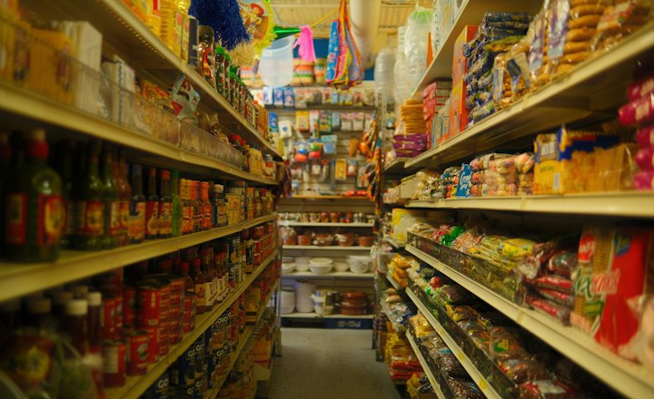

Neighbourhood retailers
Small grocery, pharmacy and hardware shops that take most payments at the counter.
Typical challenge: Counter payments are often recorded informally, so daily reconciliation is slow and lending conversations lack evidence.
Illustrative workflow
- Accept a simulated QR payment at the counter
- Review the illustrative daily collection list
- Match collections against a sample cash record
- Clearer daily visibility
- Fewer manual notes
- A demonstrative payment history for advisory talks